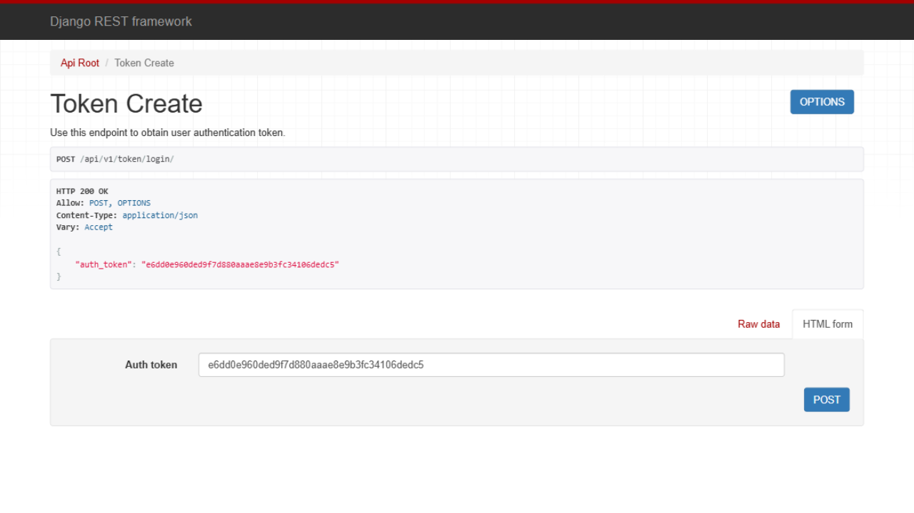
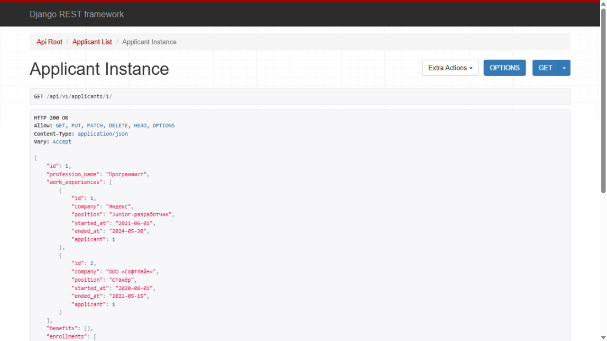
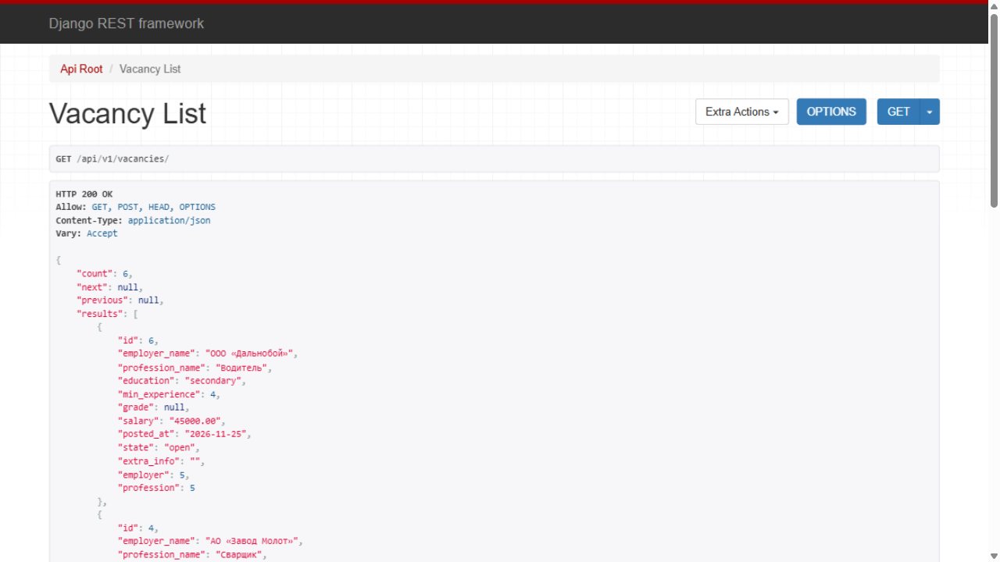

ЛР3. Серверная часть на Django REST Framework. Документирование API
Титор Матвей, группа K3339, вариант 11 — «Биржа труда» (модель БД согласована с преподавателем). Стек: Python 3.10+, Django 4.2, Django REST Framework, Djoser (токен-авторизация), PostgreSQL.
Код лабы — students/K3339/laboratory_works/Titor_Matvey/laboratory_work_3
(проект core, приложение exchange), практик 3.1/3.2 —
students/K3339/practical_works/Titor_Matvey/simple_drf_project.
Модель данных
Девять таблиц по утверждённой схеме.
| Таблица | Поля (основные) | Связи |
|---|---|---|
| Profession | name (уник.) | 1—N Applicant, Vacancy, Course |
| Applicant | ФИО, дата рождения, паспорт (уник.), телефон, email, education (4 варианта), grade, experience_years, last_salary, registered_at | FK Profession |
| WorkExperience | компания, должность, даты | FK Applicant |
| Employer | название, адрес, контактное лицо, телефон, email | 1—N Vacancy |
| Vacancy | education, min_experience, grade, salary, posted_at, state (open/offered/closed), extra_info | FK Employer, Profession |
| Benefit | amount, started_at, ended_at | FK Applicant |
| Course | название, даты | FK Profession |
| Enrollment | enrolled_at, result_grade, уникальная пара (соискатель, курс) | FK Applicant, Course |
| VacancyMatch | suggested_at, accepted, уникальная пара (соискатель, вакансия) | FK Applicant, Vacancy |
Авторизация (Djoser)
Токены (rest_framework.authtoken) + Djoser. Чтение — всем, запись — только
аутентифицированным (IsAuthenticatedOrReadOnly).
| Метод | URL | Действие |
|---|---|---|
| POST | /api/v1/users/ |
регистрация |
| POST | /api/v1/token/login/ |
получить токен |
| POST | /api/v1/token/logout/ |
выйти (токен удаляется) |
| GET | /api/v1/users/me/ |
текущий пользователь |

CRUD-эндпоинты (DefaultRouter)
| Сущность | URL |
|---|---|
| Профессии | /api/v1/professions/ |
| Соискатели | /api/v1/applicants/ |
| Места работы | /api/v1/work-experiences/ |
| Работодатели | /api/v1/employers/ |
| Вакансии | /api/v1/vacancies/ |
| Пособия | /api/v1/benefits/ |
| Курсы | /api/v1/courses/ |
| Записи на курсы | /api/v1/enrollments/ |
| Подборы вакансий | /api/v1/vacancy-matches/ |
У каждой — стандартный набор GET (список) / POST / GET / PUT / PATCH / DELETE, пагинация по 10 записей.
Запросы из задания (кастомные действия ViewSet)
| Требование задания | Эндпоинт | Реализация |
|---|---|---|
| Все варианты вакансий для соискателя | GET /applicants/{id}/matching_vacancies/ |
фильтр по профессии, образованию (ранг ≥ требуемого), разряду (≥ требуемого), стажу (≥ требуемого), состояние open |
| Выплачиваемые сейчас пособия | GET /benefits/active/ |
started_at ≤ сегодня И (ended_at NULL или ≥ сегодня) |
| Незакрытые вакансии + дней с подачи | GET /vacancies/unclosed_days/ |
exclude(state='closed'), дни = разница дат, сортировка по убыванию |
| Профессии, не представленные в вакансиях | GET /professions/unrepresented/ |
filter(vacancies__isnull=True) — антиджойн |
| Вакансии: высшее образование, ЗП 5000–60000 | GET /vacancies/premium/ |
фильтр education='higher', salary__range |
| Отчёт: открытые вакансии по работодателям | GET /employers/ |
поле open_vacancies_count в сериализаторе |
Ключевые блоки кода
Подбор вакансий (сложность — сравнение «уровней» образования):
EDUCATION_ORDER = {'primary': 1, 'secondary': 2, 'vocational': 3, 'higher': 4}
allowed_education = [
code for code, rank in EDUCATION_ORDER.items()
if rank >= EDUCATION_ORDER[applicant.education]
]
vacancies = Vacancy.objects.filter(
state='open',
profession_id=applicant.profession_id,
education__in=allowed_education,
)
if applicant.grade is not None:
vacancies = vacancies.filter(Q(grade__isnull=True) | Q(grade__lte=applicant.grade))
vacancies = vacancies.exclude(min_experience__gt=applicant.experience_years)
Детально соискатель — вложенные сериализаторы (места работы, пособия, записи на курсы, подборы):

Список вакансий (пагинация, имена работодателя и профессии через
source-поля сериализатора):

Валидация подбора — профессия соискателя должна совпадать с профессией
вакансии (serializers.py, VacancyMatchSerializer.validate).
Запуск и проверка
python -m venv .venv && .venv\Scripts\activate
pip install -r requirements.txt
# PostgreSQL: база labour_exchange, postgres/postgres (см. README)
python manage.py migrate
python manage.py fill_data
python manage.py runserver
python manage.py test exchange # 17 тестов
Пример сессии (curl):
$ curl -X POST -H "Content-Type: application/json" -d '{"username":"teacher","password":"strong-pass-777"}' http://127.0.0.1:8000/api/v1/token/login/
{"auth_token": "e6dd0e96..."}
$ curl -H "Authorization: Token e6dd0e96..." -X POST -H "Content-Type: application/json" -d '{"name":"Тестолог"}' http://127.0.0.1:8000/api/v1/professions/
→ 201 (без токена — 401)
$ curl http://127.0.0.1:8000/api/v1/applicants/1/matching_vacancies/
[{"Программист | ООО «Код и кофе» | 58000.00"}]
Тесты: 17 штук (регистрация/логин/me, права на запись, CRUD, все 6 запросов из задания, уникальные ограничения) — все зелёные.